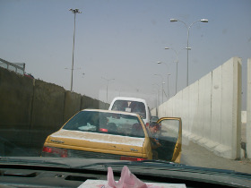

Homeland (Iraq Year Zero)

Abbas Fahdel – Irak / Frankreich 2015
334 min – HD – arab. OmeU
Sc+DoP+E+P+S: Abbas Fahdel
Doc Alliance Selection Award 2015, Preis der Internationalen Jury, Visions du Réel 2015
Two years in the life of an Iraqi family, before and after the American intervention. This powerful collective novel gives life to a saga that flows as slowly as the river that crosses Baghdad. The tragedy and the dignity of the Iraqi people come to life on the screen in the most intense moments. A reference work for the understanding of the Middle East in the past and the present.
Part I: BEFORE THE FALL (duration: 2h40m) : For several months, the director filmed a group of Iraqis, mostly members of his family, in their expectation of the war. This first part of the film ends with the start of U.S. strikes on Baghdad.
Part II: AFTER THE BATTLE (duration: 2h54m) : Americans invades Iraq and the film shows the consequences of this invasion on the everyday life of the characters. The film ends with the violent death of one of the main characters: the nephew of the filmmaker, twelve years old boy Haidar.
part 1: before the fall – saturday 10 oct 2.30 pm werkstattkino
part 2: after the battle – sunday 11 oct 2.30 pm werkstattkino
Abbas Fahdel is born in Babylon, Iraq. When he was 18 years-old, he moved to France, where he pursued his studies in cinema at the Sorbonne University until Ph.D. It is only in 2002 that he returns to Iraq, with a French passport.
Films Retour à Babylone 2002 – Nous les Irakiens 2004 – Dawn of the World 2008 – Homeland 2015